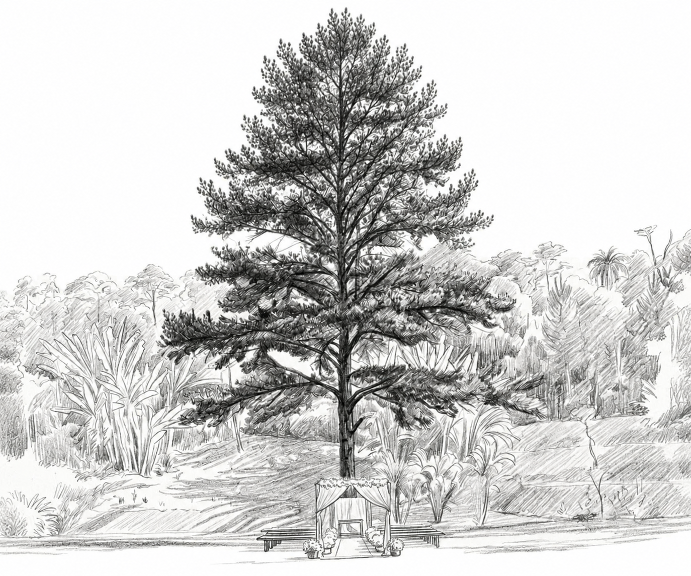

Manual dos padrinhos e madrinhas
Guide for groomsmen & bridesmaids
10 de janeiro de 2027, às 16h
January 10, 2027 · 4 pm
Chácara Florestal | São Paulo — SP

Traje dos padrinhos
Groomsmen dress code
Cinza gelo
Ice grey
Neste dia especial, gostaríamos que usasse camisa branca, calça, terno, gravata e suspensórios na cor cinza gelo.
On this special day, we'd love for you to wear a white shirt with trousers, jacket, tie and suspenders in ice grey.
Traje das madrinhas
Bridesmaids dress code
Rosa
Pink
Neste dia especial, gostaríamos que usasse um vestido longo na cor rosa, em que se sinta confortável e que realce sua beleza.
On this special day, we'd love for you to wear a long pink dress that you feel comfortable in and that brings out your beauty.
Instruções
Instructions
Pedimos que cheguem com 30 minutos de antecedência ao local da cerimônia, pois não podemos nos atrasar.
Please arrive at the ceremony venue 30 minutes early — we can't run late.
Divirtam-se! Tirem muitas fotos e nos ajudem a eternizar esse momento especial.
Have fun! Take lots of photos and help us make this special moment last forever.